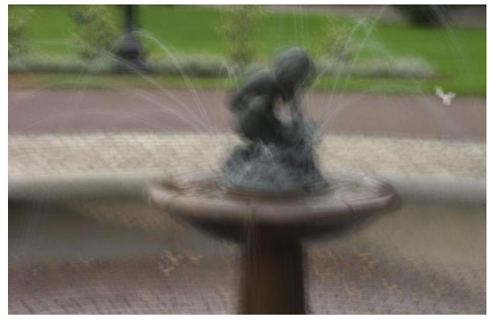
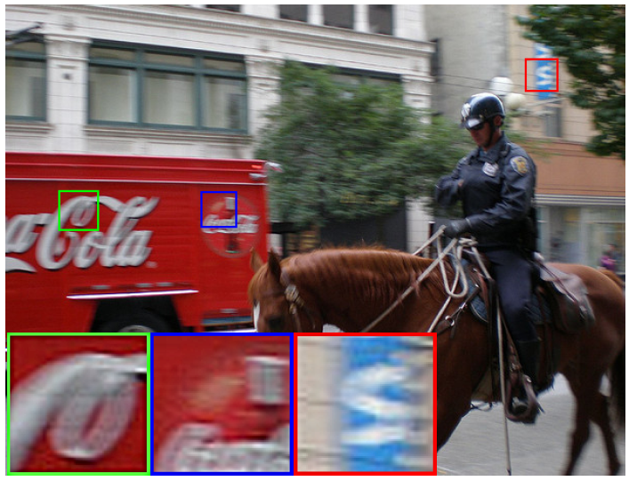

Einführung¶
Bewegungsunschärfe ist in der Fotografie allgegenwärtig und tritt bei vorallem bei Bildern von Smartphones auf. Dabei wird zwischen zwei Arten der Bewegungsunschärfe in Bildern unterschieden. Die erste Art der Bewegungsunschärfe tritt räumlich gleichmäßig auf, die zweite Art ist uneinheitlich im Raum verteilt und besitzt verschiedene Bewegungsrichtungen.
spatially uniform blurred image |
heterogenous blurred image |
|---|---|
 Quelle: [FSH+06] |
 Quelle: [GYL+17] |
Bewegungsunschärfe in realen Bildern hat eine Vielzahl von Ursachen, darunter Kamera- und Objektbewegungen , was zu Unschärfemustern mit komplexen Variationen führt. In der Praxis scheitern einheitliche deblurring Methoden in der Regel daran, die ungleichmäßige Unschärfe zu entfernen. Die meisten existierenden non-unform deblurring Methoden basieren auf einem spezifischen Bewegungsmodell, wie z. B. 3D-Kamerabewegungsmodellierung und segmentweiser Bewegung.
Zusätzlich zu den Annahmen über über die Ursache der Unschärfe beruhen die meisten existierenden Deblurring-Methoden auch auf vordefinierte priors oder manuell designte image features angewiesen.
In diesem Paper gibt werden drei Hauptprobleme mit bestehenden Ansätzen aufgezeigt:
Der Bereich der anwendbaren Bewegungstypen ist begrenzt,
manuell definierte Priore und Bildmerkmale können nicht die Natur der Daten widerspiegeln und
eine komplizierte und zeitaufwändige Optimierung und/oder Nachbearbeitung erforderlich ist.
Im Allgemeinen begrenzen diese Probleme die praktische Anwendbarkeit von Methoden zur Unschärfeentfernung auf reale Bilder ein, da sie tendenziell mehr Artefakte zu verursachen, als sie zu beseitigen.
Um mit allgemeiner heterogener Bewegungsunschärfe umzugehen, wird in diesem Paper auf der Grundlage des motion flow Modells eine auf einem deep neural network basierende Methode vorgeschlagen, die in der Lage ist, direkt eine pixelweise Bewegungsflusskarte aus einem einzelnen unscharfen Bild zu berechnen.